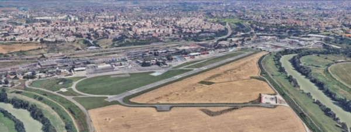

Un poco de nuestra Historia:
El Aeropuerto de Roma-Urbe es un aeropuerto italiano situado en la ciudad de Roma, Lacio. Fue inaugurado en 1928 con el nombre de Aeropuerto Littorio para usos civiles, con la posibilidad de construir una base para hidroaviones para lo cual se reservó un tramo del río Tíber. El aeropuerto fue durante los años 1930 la base de la compañía de bandera italiana Ala Littoria.
La utilización del aeropuerto está limitada a las actividades de aviación general, aeroclub, vuelo sin motor, vuelos turísticos y servicios agrícolas e industriales, aerotaxis y emergencias y protección civil. Posee también helipuerto.
El aeropuerto fue militarizado durante la Segunda Guerra Mundial y bombardeado en el año 1943. El tráfico civil se restableció tras el fin de la guerra en 1947. El incremento de las zonas urbanas en los alrededores del aeropuerto conllevó a su cierre al tráfico regular y el traslado de dichas operaciones al Aeropuerto de Roma-Ciampino, situado en el sur de la ciudad.
Con sus pistas orientadas Norte/Sur de 1084 metros, El aeropuerto de Roma-Urbe es una entrada ideal a Roma, para vacacionar, negocios o shopping!. Posee ademas un bar/restaurant perfecto para un pequeño break durante el reabastecimiento de combustible.
El aeropuerto de Roma Urbe es el aeropuerto de aviación general más transitado de Italia, con 26.298 movimientos registrados en 2017. Como tal, se recomienda preparar su vuelo adecuadamente antes de llegar y salir del corazón de Roma. A medida que se acerque al aeropuerto, si le dan un viento a favor de la izquierda para la pista 34, al completar su tramo a favor del viento antes de girar a la base, podrá admirar las bellezas de la ciudad de Roma. A su derecha verá el estadio de fútbol, y entre la una y las dos podrá ver el centro de la ciudad de Roma, desde la Basílica de San Pedro hasta los edificios históricos del centro de la ciudad... Disfrute de la espectacular vista. ¡Y no lleves tu viento a favor demasiado lejos (a menos que te lo indiquen), ya que existen severas restricciones para sobrevolar Roma!